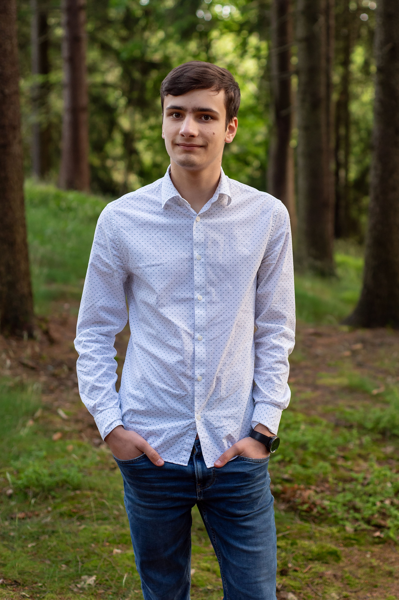

Welcome
Hello! I'm Filip Černý, a student at Gymnázium F. X. Šaldy. Outside of school, I’m diving into programming languages like Python on my own and currently involved in research at Akademie Věd ČR.
Photography is one of my biggest passions. I shoot digitally with my Canon EOS R8, and I also enjoy the classic feel of film photography using my Zenit TTL and Nikon F75 cameras. Feel free to explore my visual journey in the gallery.
When I’m not behind the camera or coding, I love traveling and discovering new places. Plus, I’m a big fan of metal music — it fuels my creativity and energy.
Oh, and I also wrote a seminar paper about 2D materials, combining my interests in science and technology.
